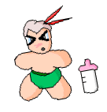
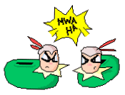
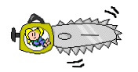

The following is a paid advertisement for: Kefka Quality Toys (tm)
Kefka: "Greetings slackers! I am here to show all you worthless people my line of WONDERFUL Kefka toys. Today woth me is ..ahem.. The (brain damaged) King of Figaro. He's outside interveiwing people about my WONDEROUS toys. But before we talk to him lets look at the products."
Kefka takes out a 12" plastic action figure. The "audience-in-a-can" gasps.
Kefka: "This is a number one selling toy. It's the Official Kefka Action Figure! Watch this..."
Kefka presses a button on the back of the toy and the eyes begin toflash red and a grainy/muffled noise plays: "Mwaaaaa haaaaa haaaaa haaaaa Mwaaaaa haaaaa haaaaa haaaaa!" The auseince-in-a-can" cheers.
Kefka: "WONDERFUL isn't it? The CHARMING laugh is an actual recording of yours truly and features the Kefka Quality Sound System, which makes it sound life like. If you purchase one now I'll include the Kefka Gift Rebate which gives you 2 cents off your next purchase. But hold on! There are more products! Like this one..."
Kefka takes out a plush toy and holds it up to the camera.

Kefka: "Mwa ha. Looks just like me, huh? This is the Baby Kefka Drink 'n Wet doll! It comes with a bottle and two changes of diapers (other accessories sold seperately). It drinks and wets with ease. Observe..."
Kefka takes the bottle at begins to feed the doll. The plush doll blissfully drinks. Suddenly the doll inhales the whole bottle. The doll begins to vibrate as the bottle is shredded in the motor inside.
Kefka: "Now lets see the little suprise it left!"
Kefka opens the plush creature's diaper and glass shrapnel flies out of the doll's buttocks. Kefka ducks to dodge the serrated glass chunks and fake milk that is spraying through the air. Finally Kefka grabs the doll and slams it into the wall and it slides down and twitches on the ground.
Kefka: "Umm... that's supposed to happen. Uh, lets see the next toy."
Kefka takes out a pair of slippers and squeezes one of them. A garbled sound comes out: "MWAAAA HAAA HAAAA MWAAAAA HAAA!" The "audience-in-a-can" claps.

Kefka: "These stylish slippers not only feture my own Kefka Quality Sound System, but if you order now I'll give you a Kefka Rebate Cupon which will allow you to get Kefka Pajamas for FREE! Now that you've seen the stuff lets see what other people think. We'll go outside on the streets with Edgar."
In Mobliz...
Edgar: "I am King Edgar Roni Figaro and I'm in Mobliz interviewing people about these.. huh? What's that word? Hold the card clos.. oh, wonderful.. WONDERFUL Kefka products. By the way, if there are any single women out there remember I'm ALWAYS avaliable! ..Ahem.. this young women right here has just purchased the Kefka Slippers and Night Gown. Lets see what she thinks of them."
The camera turns towards a green-haired women, Terra. She stares blankly into the camera.
Edgar: "What's your name?"
Terra: "Edgar, you know my name and what's with these silly slippers?"
Edgar: "Shhh! Just read the cue cards. Umm.. so, how do you like your slippers?"
Terra: "The slippers are ugly..."
Edgar: "No! The card says, 'These slippers cured my arthiritis and improved my love life!' ... Oh, never mind. Umm.. next to me is Setzer Gabbiani. He has just bought the Baby Kefka Drink 'n Wet doll. Mr. Gabbiani, how do you like your toy?"
Setzer: "What? Who wrote these cue cards? I can't even read it.."
Setzer puts on his glasses.
Setzer: "Damn. I can't even read it with my glasses. And what is this thing?"
Setzer looks at the Drink 'n Wet doll with disgust.
Setzer: "This thing sucks! It's a piece of crap! Not only that but I get the chills looking at it... look at the mug on this thing! It makes me ill."
Edgar: "Oh forget it! Forget these stupid toys! I'm selling my line of products!"
Edgar gets out a chainsaw and hacks up the Kefka toys.

Edgar: "This is the Edgar Fun Time Chainsaw! First 10 to order get a free date with me.. that's only if your a girl ofcourse. OOPS! Looks like we're outta time. Keep calling ladies! I'll show you a good time! I promise! Please call! I'll give you the chainsaw free!"